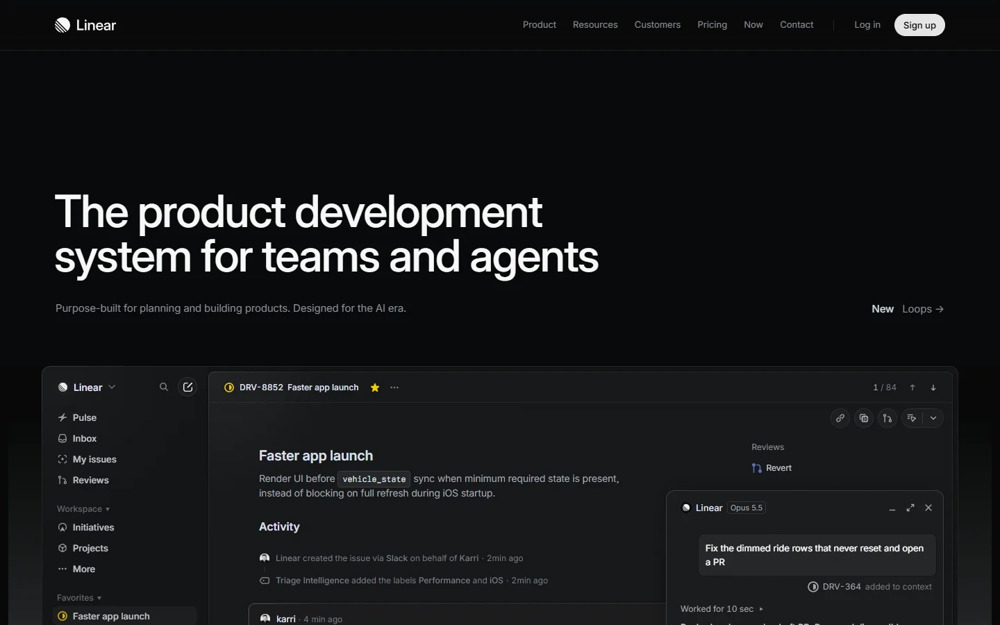
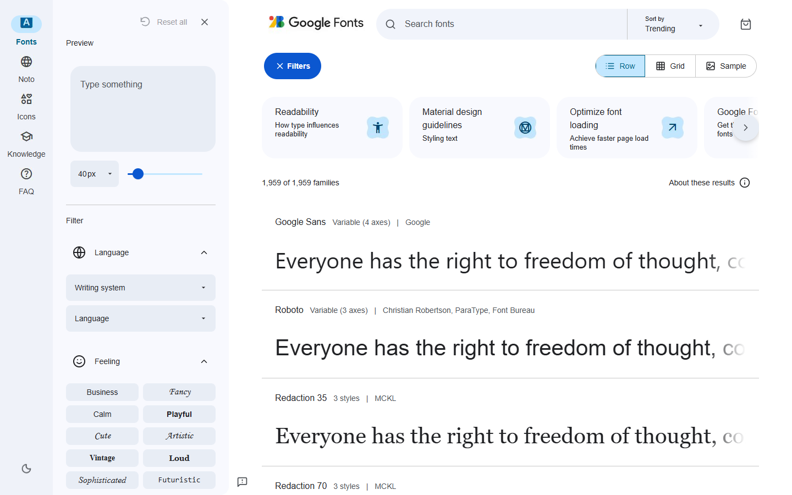

从讲解录屏复刻 Linear 整页
根据约7分钟中文讲解录屏，从空目录还原完整产品官网。需要恢复九个主要段落、长页结构、页面文案、交互与手机布局。
Sol 86.2
搁置原因
有效联网成绩86.16，高于当时低于80分的难度目标。结构、交互及大部分参数可恢复，主要失分集中在文案覆盖，尚未形成足够难的音视频复刻题。
运行与评分口径
gpt-6.1-sol · xhigh · v2 · 27.7分钟。含视觉裁判；联网。不将历史受限条件冒充当前联网结果。
保留已完成构造和模型测试、但未达到预期难度的案例。目前收录 Linear 与 Google Fonts 两道音视频网页复刻题。
查看正式案例汇总 →
根据约7分钟中文讲解录屏，从空目录还原完整产品官网。需要恢复九个主要段落、长页结构、页面文案、交互与手机布局。
有效联网成绩86.16，高于当时低于80分的难度目标。结构、交互及大部分参数可恢复，主要失分集中在文案覆盖，尚未形成足够难的音视频复刻题。
gpt-6.1-sol · xhigh · v2 · 27.7分钟。含视觉裁判；联网。不将历史受限条件冒充当前联网结果。

根据中文讲解录屏实现字体浏览器，恢复预览文字、字号滑块、Row／Grid、搜索、排序以及响应式布局。
有效成绩83.72，高于当时低于80分的目标。模型主要漏了部分文案、滑块下限和移动端细节；现有行为中仍有可由画面或产品先验恢复的部分。
gpt-6.1-sol · xhigh · v1 · 46.2分钟。含视觉裁判；另存确定性口径同分；历史受限网络条件。不将历史受限条件冒充当前联网结果。